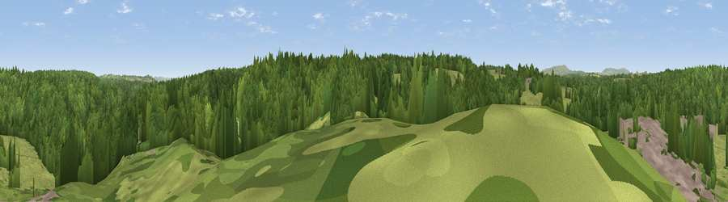

Viewpoint near Callow Hill
#42575 in England · top 93% of its area beats it · near Callow Hill · path 109 mWhere it is
The exact computed spot (SO 73225 75775). Click the marker for map links.
Public access: the nearest public right of way is about 109 m away — the final stretch may cross private land. Computed from Natural England's CRoW access layer and OpenStreetMap rights of way — not the legal definitive map. Always verify locally.
The view, rendered

A 360° render of this exact spot computed from the terrain model, tree cover and land cover — summer colours, afternoon light, calibrated against photographs of famous viewpoints. Real trees, hedges and buildings will differ in detail.
The panorama
Grey silhouette: terrain skyline in each direction (720 bearings, Earth curvature and refraction included). Dashed green: skyline with trees (+15 m) and buildings (+8 m) as obstacles. Blue strip: how far the ground is visible on each bearing.
Where the view opens
Wedge length = distance to the farthest visible ground on that bearing (vegetation-aware). Rings at 10, 25 and 50 km.
What fills the view
70% woodland · 26% grassland · 3% built-up ·
Angular shares of the visible panorama (visual magnitude), not map area. Landscape diversity 0.33 (0–1 Shannon).
Key numbers
More beautiful places nearby
The staircase of upgrades: each row has a higher view potential than everything closer. Driving times are estimates from straight-line distance, calibrated against real road routing — check an actual route before setting out.
| Place | Direction | Drive | Score |
|---|---|---|---|
| Viewpoint near Bayton | W · 3 km | ~6 min | 35.0 |
| Church Hill | SW · 3 km | ~8 min | 66.9 |
| Viewpoint near Bayton | SW · 4 km | ~9 min | 67.5 |
| Viewpoint near Ferndale | ENE · 6 km | ~14 min | 71.7 |
| Knowle Hill | NNW · 7 km | ~15 min | 75.5 |
| Abberley Hill | SSE · 9 km | ~17 min | 80.4 |
| Woodbury Hill | S · 11 km | ~21 min | 81.6 |
| Viewpoint near Great Witley | S · 12 km | ~22 min | 83.4 |
52.37935, -2.39477 · source: screening · position refined by local search. Computed location — check access rights before visiting.